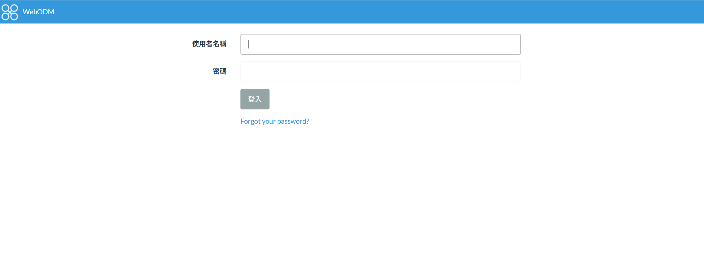
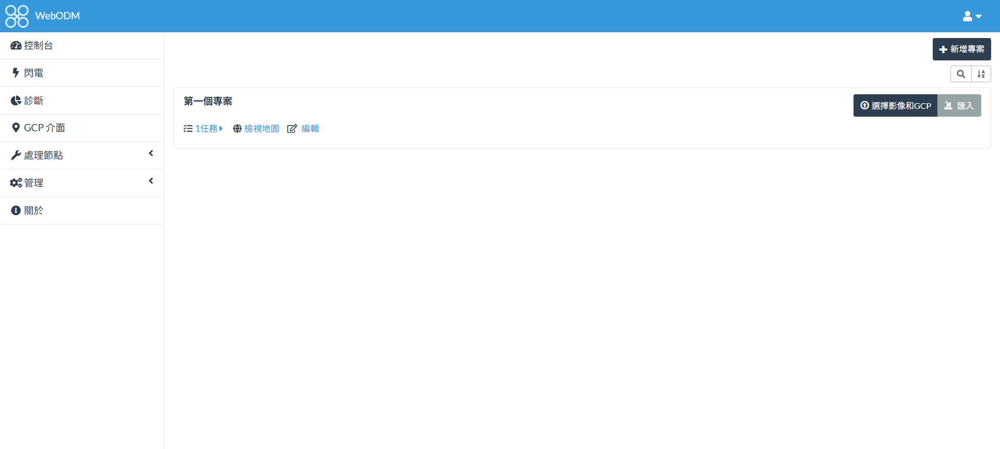
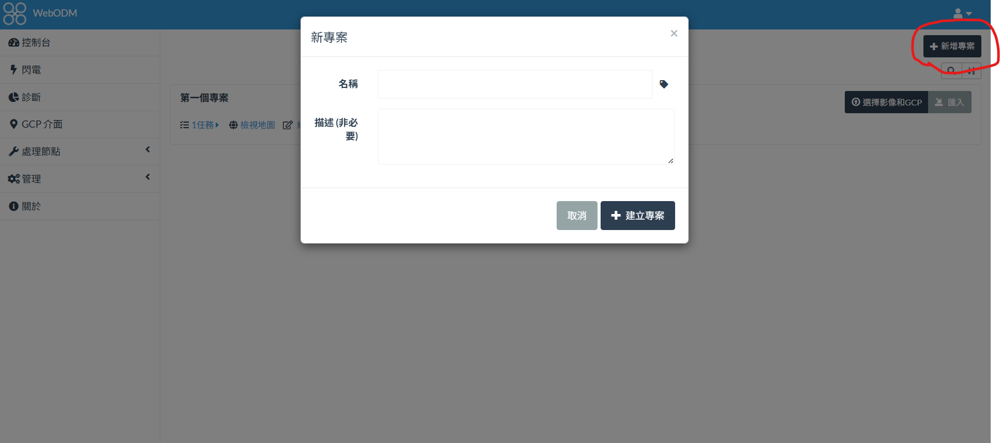
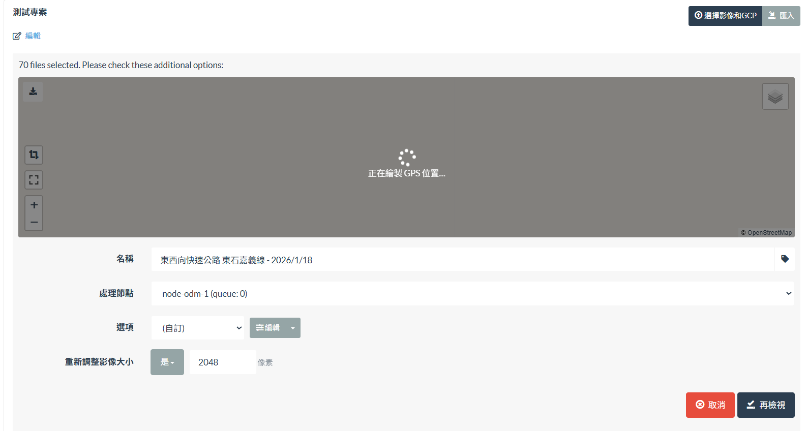
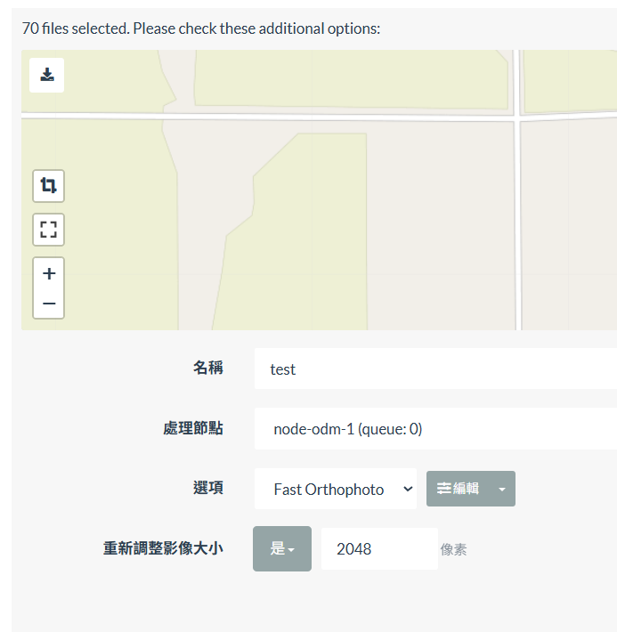
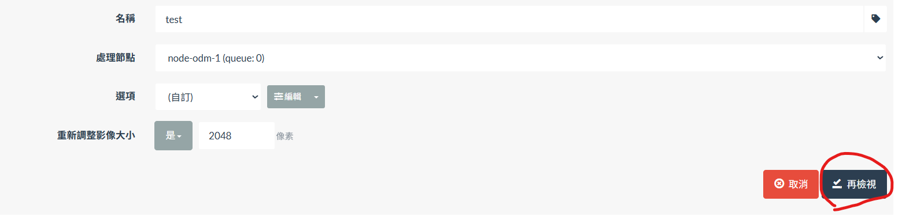
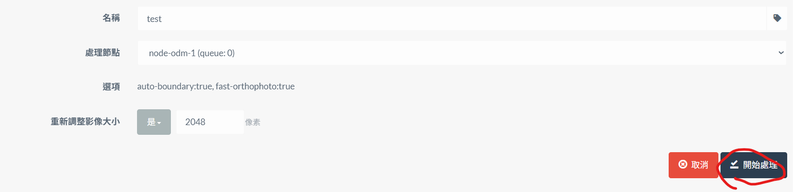
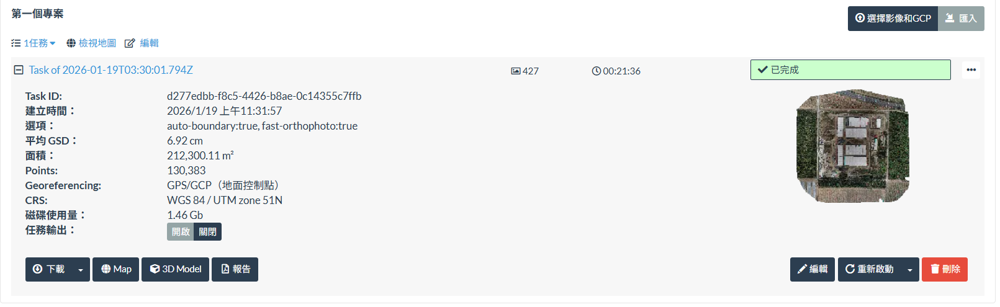

空拍機地形測繪-WebODM架設實戰
前言
本篇文章為空拍機地形測繪第二篇，空拍照片搭配地面控制點進行換算，內業處理工具使用 WebODM ，該工具為開源軟體，可以搭配Docker進行安裝，由本地端的硬體資源進行運算。
若照片量體較大導致本地端解算不穩定，除了利用Docker本身的參數進行調校硬體配置外，也能透過訂閱 WebODM Lightning 進行穩定的輸出，相較於其他訂閱軟體也是個比較經濟的選擇。

本地端安裝
官方有提供比較簡易的一鍵安裝程式(要付費)以及Docker環境建立。
以前看到WebODM想說太好了，我可以把它安裝起來操作看看，後來才知道要完全無料使用的話還需要具備Docker基礎知識，礙於當時對Docker認知不足遲遲無法進行操作。
必要套件
- python
- git
- docker
啟動
windows的CMD跟powershell不能直接用，需要在git bash中才可以
1 | git clone https://github.com/OpenDroneMap/WebODM |
產製目標
正射影像
如果只是單純要放在簡報用的，倒不一定要製作地面控制點
DTM
若精度要求至cm級，則需要搭配地面控制點進行點雲計算。
3DMesh
若精度要求至cm級，則需要搭配地面控制點進行點雲計算，但這部分容易遭遇記憶體不足的問題(本人身受其害)。
操作步驟
註冊或登入

### 進入主控台
### 新增專案
### 選擇影像與GCP
### 參數設定 這裡需要調整的只有選項跟重新調整影像大小 >正射影像選Fast Orthophoto，DTM選DSM+DTM，當然也能進編輯做些更細部的調整，這部分有需要再來異動吧!
點選再檢視

### 點選開始處理
### 任務完成
踩坑過程記錄
選項參數設定誤解
split，讓大量照片可以切分區域進行運算後再拼接，經測試後發現變小對於記憶體反而是吃力的，split=100結果出現error，split=500結果正常。
可觀測性不佳
曾經睡前開啟比較繁雜的任務，結果睡著不到1小時就出現記憶體不足或者硬碟不足導致docker shutdown，白白浪費一個晚上的計算時間。
解法1:電腦建立好WebODM的時候可以透過localhost:8000來操作，如果不想在那邊顧機器，又突然想要進去看是不是有異常，此時可透過網關設定動態網址後並由外部連線轉發至該電腦的localhost:8000，雖然還是要人去看，但至少可以遠端操作。
解法2:webODM有API可以呼叫，並且可以傳遞目前的任務進行情況，從Telegram的通道進行通知，這是不需要人去看的最佳方案，當然相對細節也比較多，涉及如何生成TelegramBot的流程以及API本身的回傳判釋操作，有機會再來寫一篇文章。
GCP精度不足
為照片重疊率不夠高的問題，原本的1秒1張取樣我設置為5秒1張，導致重疊率不夠高，某一個GCP點只有算到1張照片，導致該點的Z值誤差高達60cm，整份點雲不能使用，後來我改為2秒1張就可以順利通過品質報告了!
內建GCP介面難用
內建的需要用眼睛一張一張去找出點資料在哪裡然後標記、點右側面板的控制點，這實在非常的花時間，好在有國外神人針對這個問題想出從點資料與照片GPS位置進行座標換算，濾出由近而遠的照片，就只要點過濾好的照片就好，永久版一次性費用29美金，但是可以省下大量時間，已購。
雖有提供原始碼可以自行部署，不曉得為何我用本機安裝及用docker安裝就會失敗，每次都死在建立 eletron?!
記憶體不足
docker預設swap為本機RAM+2swap，16GB的電腦可以保留4GB給電腦用，其他開給docker，並且可以設定為6swap
在C:<你的帳號>下建立一個 .wslconfig
1 | [wsl2] |
硬碟不足
docker預設會將 .vhdx放置於C:，然而往往C槽很容易爆掉。
電腦重新開機後，不要開啟docker，找出 C:<你的帳號>，非常大的話，就可以差不多改去D:!
設定方式可以透過 Docker Desktop > Setting > Resource > 選擇要放置Disk的位置(建議是去D槽，畢竟D槽空間通常比較大)